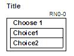
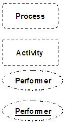
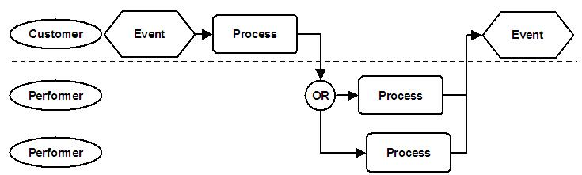

Process Flow Standards are defined for the following major areas:
-
Process
-
Event
-
Performer
-
Control
-
Information
-
Annotation
Process
The following symbols represent the basic components of the process diagram.
Name
|
Symbol
|
Description
|
Process
|
|
Shape: A rectangle with round corners
Text: Verb-Object format
A Process is a defined sequence of sub-processes or activities
Examples: Fulfill Order, Process Payment
|
Activity
|
|
Shape: A rectangle with square corners
Text: Verb-Object format
An Activity is a logical set-of-work completed by a specific performer at a specific point and time
in a business process without relinquishing control. The activity with only a number is either a manual or
automated activity. It is a manual activity if performed by role. It is an automated activity if performed
by a system.
Examples: Change Order, Pack Order, Post Payment
|
Interactive Activity
|
|
Shape: An Activity rectangle with an Application Function rectangle positioned below.
Application Function is described below.
The interactive activity is an activity performed with the use of an application or system.
|
Interaction
|
|
Shape: A solid line arrow.
Text: No text
A solid line between process or activity symbols, with an arrow head that indicates the flow of work
|
Event
Events are external triggers that cause the process to respond.
Name
|
Symbol
|
Description
|
Actual Event
|
|
Shape: Hexagon
Text: Verb-Object format in past tense to indicate something has happened that will start the process. Past
Tense will also distinguish an Event from a Process or Activity. Events represent the trigger that starts a
process. It also signifies the end of a process, which is usually the start of another process.
Examples: Call received from customer or Call received, Shipment sent to customer or shipment sent
|
Temporal Event
|
|
Shape: Hexagon
Text: A statement indicating time
Temporal events trigger processes at predetermined times.
Examples: Time to call customer, weekly, daily, every five minutes, month end
|
Performer
The Performer symbol appears at the left edge of the diagram and is responsible for all activities, controls, and
events aligned to it across the page. There are three types of performers.
Name
|
Symbol
|
Description
|
Organizational
Performer
|
|
Shape: Oval that is placed on the left side of a flow diagram in the appropriate swim lane.
Text: Noun
An organizational performer represents an organization that performs work. Typically, you would align the
organization along some management structure, vertical or horizontal.
Examples: Engineering, Accounting, Design
|
Role
Performer
|
|
Shape: Oval that is placed on the left side of a flow diagram in the appropriate swim lane.
Text: Adjective-Noun format ending in “er” or “or” if possible to distinguish roles from Positions or
Jobs
A role performer represents an individual that performs a set work without relinquishing control. One
person can perform several roles or several individuals can perform a role. You would typically relate the
roles to a specific skill set or authorization level.
Examples: Quality Checker, Invoice Approver, Product Designer
|
System
Performer
|
|
Shape: Oval with horizontal line at the top and the word System. Place it on the left side of a flow
diagram in the appropriate swim lane.
Text: The system name that performs the work
A system performer represents a system that performs work based on a specific set of requirements.
Examples: ERP Packages, EAI, Account Payable
|
Control
Control symbols dictate the flow of work through the process, such as a branch or merge.
Name
|
Symbol
|
Description
|
A ND
|
|
Shape: Circle
Text: AND
The AND logic requires that all incoming paths are required before flow continues.
Examples:
|
OR
|
|
Shape: Circle
Text: OR
The OR logic requires that any one of the incoming paths are required before flow continues.
Examples:
|
Exclusive OR
|

|
Shape: Circle
Text: XOR
The Exclusive OR logic requires that any one and only one of the incoming paths are required before flow
continues.
Examples:
|
Compound
Logic
|
|
Shape: Divided Circles
Text: AND, OR, XOR
The compound logic symbols provide for two logical operations within one symbol. Apply the upper logic
against the incoming paths and the lower logic against the outgoing paths.
Examples:
|
Decision
|
|
Shape: A diamond
Text: A question use to determine the path to take. The question usually results in a yes – no answer that
determine the path to take. Convention is the “yes” branch continues horizontally to the right and the “no”
condition comes from the bottom.
Examples: Request Approved? The yes condition would allow the process to continue to the right. A “no”
condition would flow from the bottom, and in most cases to a Rework of some sort.
|
Choice
|

|
Shape: A rectangle representing a choice with imbedded rectangles representing each of the activity
choices.
Text: Title describes the type of choice. The “choice” represents the results of the choice.
A choice box allows the user to choose 1 through “n” activities in any order; however, you must complete
each activity before the next activity can begin.
Examples:
|
Multi-Thread
|
|
Shape: A rectangle with imbedded rectangles representing each of the threads of activity.
Text: Title describes the set of activities. The “Activity” represents the name of the following
activities
A Multi-thread box represents all threads of activities that you perform in parallel. The multithread box
indicates a point in the process where a single role may begin to perform multiple concurrent activities.
Take the finish path when all of the activities are complete, or the user decides to end all
activities.
Examples: In order to develop an analysis model, a structural engineer will need to create the geometric
input, determine structural and thermal attributes of materials, research existing designs, and determine
load conditions and constraints. Each item requires a “thread” of several activities, and the engineer will
bounce between these threads in any order. When all activities are complete, the finish will continue to
submit and run the analysis program.
|
Wait
|
|
Shape: Circle with a number inside.
Text: a number representing the number of incoming paths that must be present for the work to
continue.
You may place a wait symbol at either the beginning or end of an activity, which indicates a wait to start
or wait to complete condition.
Examples: Both the product and packing material need to be complete for proceeding to packaging.
|
Restart/ Rework
|
|
Shape: One triangle pointing down (Restart) and one to the left (Rework).
Text: The R numbers inside the triangle reference each other.
The Restart symbol designates a return to a specific point in a process. The Rework symbol indicates the
start or the rework. The combination of symbols used to draw attention to problem areas within the process
by depicting an undesired condition.
Examples: If you find missing information, the flow must return to an earlier point in the process in order
to capture the necessary information. If you detect a defect in a product, you must rework it by sending it
through a portion of the process again.
|
Multi-Instance
|
|
Shape: Brackets with small boxes indicating the beginning and end of the Multi-Instance
Text: Name describing the Multi-Instance and number of instances
Multi-Instance represents a set of activities that may occur multiple times in one instance of the
process.
Examples: The entry of several line items within one order. The translations into several languages within
one publish cycle.
|
Information
Information symbols are normally related to activities, and represent data or applications used.
Name
|
Symbol
|
Description
|
IT Resources
|
|
Shape: A rectangle with two vertical bars on each side.
Text: The name of the application, module, function, screen, or view associated with the supporting IT
systems or a reference number to a detailed specification of the function associated with a specific
activity.
Use the Application Function symbol to signify supporting information technology, and we can use it at
several levels. At the process level, it can indicate the applications you are using. At the lowers, levels
it indicates the modules or functions you are using. You can also extend it to represent screens and views
in the applications. On an activity performed by a system, the Application Function specifies the automated
capabilities or requirements.
Examples: Application Name, Module Name, Screen Name, View Name
|
Data
|
|
Shape: Rectangle with two vertical lines at each end.
Text: Data set or data element
The data symbol is used to identify data that is used in the process. You would typically use it at the
lower levels of the process.
Examples:
|
Annotation
The annotation symbols add clarity or more information to the process flow.
Name
|
Symbol
|
Description
|
Process Connector
|
|
Shape: Double process symbol
Text: Process name
Use a flow connector to pass control from one process to another. Place it on the performer line of the
process where you are transferring.
|
Flow Connector
|
|
Shape:
Text: The To location and the From location.
A flow connector is used to break and reconnect flow lines. Use it across page boundaries or within a page
to reduce the number of lines.
|
Out of Scope
Processes and
Performers
|

|
A recognized process or performer that is not described within the scope of effort. If it is determined
that information needs to be collected and documented the dashed symbol can be changed to a solid line
symbol.
|
Control Point
|
|
Shape: Rounded corner rectangle with an arrow that points to a specific point on the flow diagram.
Text: CP: xxx, where xxx is a control point identification code
A location in an application, system, or process requiring action to ensure data integrity, effectiveness,
and efficiency of operations, reliability of reporting or compliance of laws or regulations.
|
Measurement Point
|
|
Shape: Rounded corner rectangle with an arrow that points to a specific point on the flow diagram.
Text: MP: xxx, where xxx is a measurement point identification code
A point in the process where a critical measurement must be taken.
|
Questions
|
|
Open Questions on a Process diagram. Used to make it clear that there are still unresolved issues with the
diagram itself. Prevents questions from going unanswered or implying that the diagram is accurate and
complete.
|
Note
|
|
Notes on a process diagram to assist the reader by providing additional information on the diagram
|
Points of interest
|
|
Used to make important point for presentation purposes. Use it to indicate: Problem areas, Critical Success
Factors, Current Initiatives, Strategic or Goal areas on a process diagram.
|
Collaboration
|
|
Shape: Square cornered dashed rectangle around a vertical set of common activities.
Text: “Collaboration” at the top of the box.
Collaboration represents a coordinated effort by several performers while one performer maintains
control.
|
A Process Flow represents the sequences of processes from starting event to ending event. Draw it without performers if
initially you do not know them, or if you are identifying the work before you assign it to a performer.
When you add the performer, it indicates which organizational role is performing each process and shows the decision
logic used to navigate through the flow. A good technique to keep the attention focused on the customer is to put
the customer(s) in the top rows (swim lanes) and the systems on the bottom. You would draw a line below the
customer(s), which then identifies all of the customer touch points.

An Activity Flow is the lowest level flow diagram. Any diagrams below the Activity Flow represent the sequence of work
performed by only one individual. Like the Process Flow, you can initially draw the Activity flow without performers
during the process design phase.
When complete it represents the sequences of activities from starting event to ending event. It indicates which
individual role is performing each process and shows the decision logic used to navigate the flow.
Activities that use IT Capabilities (enabled and required) will be annotated with the Application Function symbol,
which identifies the capabilities required by each activity. The individual activity capabilities can be
aggregated to represent the capabilities for the process.
|